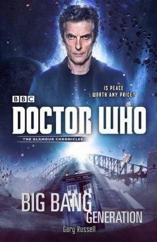

|
Big Bang Generation
|
BASIC PLOT DOCTOR COMPANIONS MATERIALISATION CIRCUIT Pg 129 In a copse, Echo Point, 1934. Pg 224 The Blue Mountains, thousands of years ago. PREPARATORY READING A familiarity with Bernice Summerfield and the Big Finish line would help. CONTINUITY REFERENCES Pgs 12-13 "They consulted the writings of Trout the Talpidian; the journals of the Generational Professorial Clone Family of Candy; the mythical Sky Ray Lolly Wrappers of the Miwk Archives; the Holy Dam Scriptures of the Tarka People of Leina VI; the Repository Banks on the Large Moon of Pixlie and even requested access to the Panopticon Records from the Obverse, but got no response." The second reference is likely to Professor Arthur Candy, who first appeared in Steven Moffat's Continuity Errors in Decalog 3. The third reference is to a very early piece of Doctor Who-related merchandise. "Pixlie" is a reference to Doctor Who historian Andrew Pixley. The Panopticon is from The Deadly Assassin, while Obverse and Miwk are publishers of non-fiction Doctor Who books. Pg 13 "In the fifty-first century, at Stormcage Confinement Facility Number One, a message was received by a representative of the Church of the Papal Mainframe requesting the loan of a prisoner called Professor River Song." The Time of Angels etc. River Song first appeared in The Silence in the Library. Pg 16 "Now, one of the more popular bars - popular because it had the best beer and the lowest body count - was the White Rabbit." The bar was first seen in the audio Everybody Loves Irving. Pg 18 "The Doctor whipped out his sonic screwdriver." Fury from the Deep et al. Pg 25 "Well, to be fair to K-9, you were possessed by the ancient spirit of the Kortha Gestalt. Sarah Jane and Luke did explain to me that you weren't best pleased, though..." K9 first appeared in The Invisible Enemy. Sarah Jane Smith first appeared in The Time Warrior, although this is a reference to her series The Sarah Jane Adventures, with Luke her adopted son (seen in Doctor Who in Journey's End). Pg 31 "One day, salvation presented itself in the form of a Headless Monk who came bearing a letter" A Good Man Goes to War. Pgs 37-38 "The less he knew about this Professor Song (and the dubious things she was reported to have done) the better - leave that to Colonel Octavian, the Father of the Chapel charged with looking after her." The Time of Angels. Pg 40 "I'm an archaeologist, but probably not the one you were expecting." Night of the Doctor. Pg 43 "He had his sonic screwdriver in hand" Fury From the Deep et al. "A few months ago when he and his friend Clara had got separated at a Sam Smith concert." The Snowmen et al. Pg 58 "The Headless Monks said they'd send the best." A Good Man Goes to War. Pg 59 "I'm not impressed, but the Monks obviously were." A Good Man Goes to War. Pg 62 "She had discovered the Doctor and his friend Ace on a cemetery world called Heaven, where they had defeated a weird spore-like life form called the Hoothi, which was trying to expand itself by reanimating the corpses." Love and War. "The two would continue to keep coming into each other's lives (quite literally in the Doctor's case, as she had seen him with more than one face)." The Dying Days "Yes, Bernice had possessed for a short period of time a couple of Time Rings that gave her limited access to the past and future but they were unreliable and, if she was quite honest, it scared her a little to use them." Happy Endings et al. Pgs 62-63 "She had an 18-year-old son, a dead husband, and at one point had had her body stolen away from her and occupied by a less-than-charming life form." Jason died in the audio The End of the World. Benny's body was stolen in The Squire's Crystal. Pg 63 "Whatever those Time Rings (and maybe even the TARDIS itself) had done to her would pop up and say, 'You had a good laugh, Benny, but here's where you pay the piper.'" Happy Endings. "She'd once had a vision of a possible future, seeing herself dying alone on some sandy planet light years from Peter and everyone else she loved and cared about." Uncertain reference. Pgs 63-64 "He introduced you to Jason, to Adrian, to Guy, to Bev, to Irving, and without all of that there'd be no Peter, no Joseph, no Dellah, no Collection, no Legion - hell, no Wolsey!" Jason Kane (Death and Diplomacy et al), Adrian Wall (The Doomsday Manuscript et al), Guy de Carnac (Sanctuary), Bev Tarrant (The Genocide Machine et al), Irving Braxiatel (Theatre of War et al), Joseph the Porter (Oh No It Isn't! et al), the planet Dellah (The Dying Days et al), the Braxiatel Collection (Theatre of War et al), Wolsey the cat (Human Nature et al). Pg 66 "I was born in another time. Another world." Susan Foreman's line in An Unearthly Child. "I was born in the twenty-sixth century." Paraphrasing Susan's original line in the Pilot. "I have spent my life searching for the answer to free movement in time and space. I don't expect to find it solved in this junkyard of a planet." Paraphrasing Ian's line in An Unearthly Child. Pg 72 "All four of us need to get down there before they realise what we're up to, grab our time-locked future selves and hope the Blinovitch Limitation Effect shorts out the whole problem." Day of the Daleks. Pg 73 "Bernice knew that her exposure to the time vortex after years of TARDISes and Time Rings and other paraphernalia would protect her slightly, but the others were utterly frozen." Happy Endings et al. Pg 99 "You know it's a word from the time of the Great Old Ones?" White Darkness et al. Pg 102 "The Matrix on Gallifrey?" The Deadly Assassin et al. "'Gallifrey is...' The Doctor tried to find the right word. 'Missing.'" Death in Heaven. Pg 104 "Well, obviously the bar wasn't her home but she certainly spent a lot of time in it, mainly because it was run by her good friend Irv-" Irving Braxiatel (Theatre of War et al). He runs the bar in the audio Everybody Loves Irving. Pg 108 "Can't be Tunguska - you and I both know what that was about." Birthright. Or Warlock. Or The Wages of Sin. It's kind of the Atlantis of the NAs. Pg 138 "'When I first met Benny,' the Doctor said, perhaps enjoying this too much, 'she wasn't really a professor; she just told everyone she was to get to a planet called Heaven.'" Love and War. "Obviously I am a professor now. I mean, I did it properly afterwards" Return of the Living Dad. Pg 142 "We even sold stuff to the Braxiatel Collection..." City of Death et al. Pg 145 "Years ago. On Skaro. Ace stole an Omega device." Skaro first appeared in The Daleks. Ace first appeared in Dragonfire. "I have been through hell, literally. A war with the Daleks that destroyed Gallifrey, leaving me pretty much the last of my kind." The Time War (The End of the World, et al). Pg 146 "After a man I loved died and you were there to look after me - you went to extraordinary lengths to understand my grief and to empathise." Sanctuary, Human Nature. Pg 147 "Every time I visit France, I think of Guy de Carnac and what he sacrificed, Benny." Sanctuary. "I don't do hugging, really." Death in Heaven. Pg 158 "His name is... was Antonio, and he died." Antonio Tulloch, who appeared in (and died in) the audio The Curse of Fenman. Pg 166 "Ruth had known Peter for a year now, seen him grow from an angry teenager bitter abut his mother 'abandoning' him for a year or so, leaving him to fend for himself in a post-war slave put until he was rescued." The Curse of Fenman, Paradise Frost. Pg 167 "The anger that propelled him forward back then had been a result of someone messing with his head, convincing him that his lover was still with him, every day sharing his home and bed. In fact, he'd died in the slave-pits of Bastion, a fact that had been exploited by a vampiric alien who had manipulated him for the next year." The Curse of Fenman. Pgs 167-168 "Ruth had chosen to focus on the life she recalled, as a worshipper of Poseidon, when she was happy in blissful ignorance." The Temple of Questions. Pg 169 "My dad liked pizza. Hawaiian." It's unclear if Peter is referring to Adrian Wall or Jason Kane here. Pg 180 "He immediately put his left hand to the rear of his belt and brought out a Fifth Axis standard pulse gun" Life During Wartime et al. Pg 184 "'My dad was Killoran. I was born on Dierbhile." Adrian Wall, The Glass Prison. "Born there, brought up in KS-159, transported to the slave pits of Bastion, now living on Legion." The Glass Prison, Tears of the Oracle, The Curse of Fenman, Paradise Frost. Pg 188 "Did you hear about the guy who managed to sell the Sydney opera House to five different people, until the cops got wind of it?" The Ribos Operation. Pg 195 "'Mutual friend,' she said back. 'I call it Ace-ing the engine!'" Ace first appeared in Dragonfire. Pg 204 "Your life's work has been not so much uncovering a potential gateway to glory and Valhalla or Avalon or Nirvana or the Axis Mundi or Paradise or even Sto'Vo'Kor." Avalon might be a reference to The Shadows of Avalon. Axis Mundi may be the heaven of the Fifth Axis. Pg 208 "A gumblejack swimming in the seas of Medazzaland turned into a hamster" The Two Doctors. "A human woman and Martian warrior celebrating their eighteenth wedding anniversary with their three children posed for a holovid" Placebo Effect. Pg 210 "All those years travelling with you, years using the Time Rings, years frankly just messing around with causality - it's affected me, too, made me immune to Time, to some extent." Happy Endings et al. Pg 211 "And he was facing Clara Oswald. Who smiled, blurred and became Amy Pond. Who blurred and became Rory Williams, then River Song, then Wilfred Mott then Donna Noble, Martha Jones, Jack Harkness, Mickey Smith, Rose Tyler, Cinder, Molly O'Sullivan, Tasmin Drew, Lucie Miller, C'rizz, Charlotte Pollard, Samson Griffin, Gemma Griffin, Mary Shelley, Grace Holloway, Ace McShane, Hex, Mel Bush, Evelyn Smythe and so many others..." These are all the New Series and Big Finish companions. "Small, dark-haired, elfin featured, a big grin on her face. 'You came back after all, Grandfather,' she said." Susan Foreman. Pg 212 "'I'm the Doctor. Where am I?' 'I'm the Doctor. Where am I?' 'Last time this happened to me, people repeating my words, it really didn't go very well for me, so if we could avoid all that.'" Midnight. But see Continuity Cock-Ups. "Welcome, Time Lord. That is a vast and powerful domain to claim lordship over." This reverses a line from Enlightenment. Pg 214 "Around him, the Federality of Bandril were taking hit after hit." Timelash. Pg 215 "I brought Jamie and Zoe here once." The Highlanders et al; The Wheel in Space et al. Pg 219 "Turn it off, reverse the polarity of its neutron flow, turn it off and turn it back on again, I don't know." The Sea Devils et al. Pg 220 "I like the music of the spheres." The Music of the Spheres was a musical mini-episode that aired during the David Tennant era. Pg 230 "There's no such place as the Planet of the Hats." Partners in Crime. OLD FRIENDS AND OLD ENEMIES Pg 49 Peter Summerfield, Jack and Ruth are new to the Doctor Who line, but they've appeared in a number of Benny novels and audios. Pg 17 Keri the Pakhar, who first appeared in Legacy. Pg 208 Stacy and Ssard from Placebo Effect briefly appear. NEW FRIENDS AND NEW ENEMIES The Ancients.
CONTINUITY COCK-UPS PLUGGING THE HOLES [Fan-wank theorizing of how to fix continuity cock-ups] FEATURED ALIEN RACES Pg 17 Pakhars, giant hamsters. Pg 18 Killorans, Rottweiler-like creatures. Pg 18 A Tahnn. Pgs 29-30 Kik the Assassin is a reptile lady from Spyro, with turquoise skin, a silver mohawk and pupil-less yellow eyes. Pg 36 A Talpidian, a mole-like creature. Pgs 40/49 Jack is a Kadeptian, and has a pointed chin, red eyes and legs like a grasshopper. Pg 49 Peter is half human, half Killoran. Pgs 43-44 The Kenistrii are tall, muscular, bright pink reptiles. Pg 213 The Ancients. FEATURED LOCATIONS Pg 11 Sydney, early twentieth century. Pg 12 London, early 21st century. Pg 12 A ship in the 27th century. Pg 12 The 36th century. Pg 13 Two Stormcage Confinement Facilities, 51st century. Pg 16 Legion, 27th century (Page 15). Pg 27 El Diablo, the 49th century. Pg 30 Mason's World, 5066. Pg 34 Aztec Moon, 5066. Pgs 77/102 Sydney, 2015. It's late December (Page 131). Pgs 113/115 Echo Point, The Blue Mountains, 1934. Pg 207 Marbella, 1964. Pg 208 Turkey, fourteenth century. Swansea, 31st century. Medazzaland, time unknown. Micawber's World, 4017 (it's 18 years after Stacy and Ssard's wedding, which took place in 3999 in Placebo Effect). The twin planet of Romulus and Remus, time unknown. IN SUMMARY - Robert Smith? |
|
 |